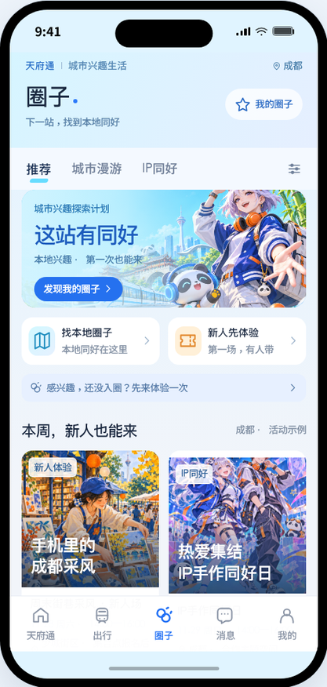
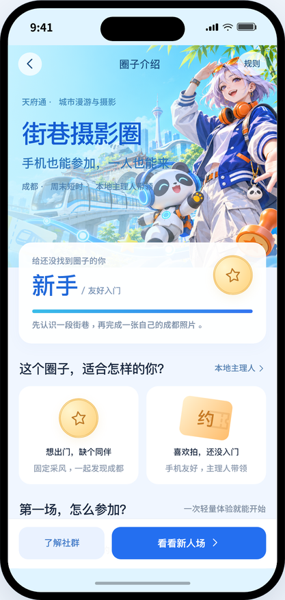
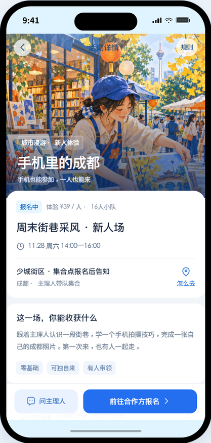
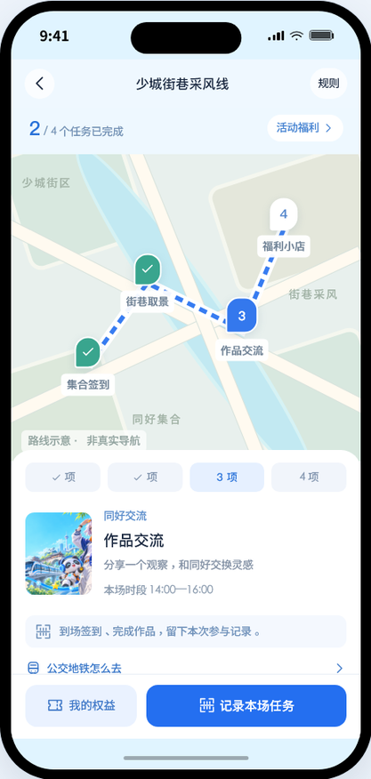
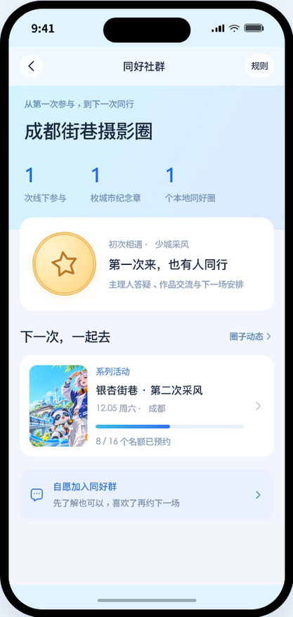
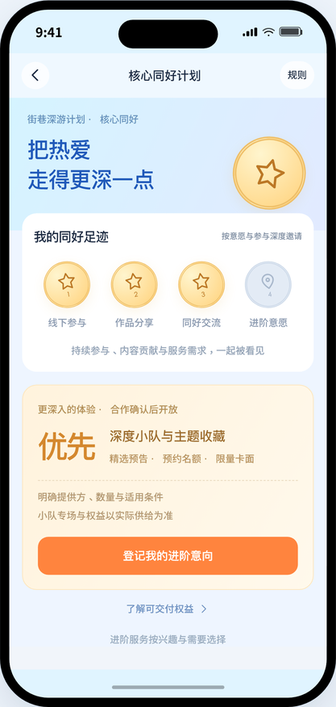

闲鱼 · 交易
把懂货的人聚起来，让货更容易流通。
用户本来就来找货、卖货。晒物、求购与经验交流，帮助分散的供需完成判断和匹配。
平台目的：提高交易信任与匹配效率，促进成交和物品周转。
研究依据与逻辑说明
闲置与兴趣商品多为非标，同品类成员能补充成色、价格、配件及使用经验。圈子沿着交易线，能复用商品供给、信用及履约服务。
阿里官方业务介绍与2023年产品采访支持这一逻辑。历史鱼塘不作为现行入口。资料 [1–2]
本地兴趣连接计划 / 2026.11
把通勤中的一次看见，
变成本地兴趣的第一次参与。
01 / 先理解平台为什么做圈子
先看三条业务线，圈子分别把用户带向哪里。
闲鱼 · 交易
用户本来就来找货、卖货。晒物、求购与经验交流，帮助分散的供需完成判断和匹配。
平台目的：提高交易信任与匹配效率，促进成交和物品周转。
闲置与兴趣商品多为非标，同品类成员能补充成色、价格、配件及使用经验。圈子沿着交易线，能复用商品供给、信用及履约服务。
阿里官方业务介绍与2023年产品采访支持这一逻辑。历史鱼塘不作为现行入口。资料 [1–2]
小红书 · 内容与经验
用户已有看经验、找答案的习惯。圈子让一次浏览，延续为求助、回复和新的经验分享。
平台目的：增加有用内容与同好关系，带动复访和后续消费决策。
围绕主题持续交流，可以承接笔记里未被解决的问题。求助、交流和交易等具体行为，要分别看实际产品能力与服务入口。
公开资料主要支持兴趣交流机制；小红圈、群聊和售卖工具不能混为一谈，功能开放范围需App实测。资料 [3–4]
抖音 · 达人与粉丝
用户因创作者而来。动态、签到、投稿与讨论，让达人在非开播时也能持续触达粉丝。
平台目的：延长粉丝互动，带动内容与直播回访。
达人已有内容供给、受众关系和运营动机。圈子复用这些基础，形成平台内更稳定的触达；后续经营随达人类型而不同。
依据2025年粉丝圈子内测报道，不代表所有账号已统一开放，也不等同于所有达人都带货。资料 [5]
由此得到一个共同经验
沿用主业，是因为用户动机、供给和服务都已存在，组织者也有持续投入的理由。
那么，天府通最值得延伸的能力是什么？
02 / 再找到天府通的机会
圈内人有自己的群和主理人。更多感兴趣、想尝试的人，却不知道本地哪里有活动、怎样参加。
天府通的切入点
用通勤App的高曝光，让圈外用户先看见圈子；再把活动信息、报名购票、卡券福利与线下体验接起来。
本地属性让活动更近，IP卡潜力让兴趣可收藏，媒介能力让更多潜在人群找到入口。
先带来原有圈层之外的新人，让用户完成第一次参与；再沉淀自愿加入的同好社群，发展持续活动、复购和核心会员服务。
让曝光成为真实参与，让参与成为持续关系。
因此，业务动作要顺着这条转化链路展开。
03 / 把机会落实为一条转化链路
先被看见，再参与，再留下。
天府通的核心优势
在App可调配入口，让圈外潜在人群看见本地兴趣。
把兴趣翻译成能理解的场景
看懂谁在组织、玩什么，以及自己怎样加入。
给出清楚的场次、渠道和实际可用的卡券福利。
真实到场，完成作品、集章或与活动相关的任务。
由主理人接住新人，提供答疑、同好交流与下一场消息。
用系列活动、进阶体验和相关商品，形成复参与。
根据参与意愿与深度，提供更早信息、确认名额、授权限量品与深度专场。
把圈内关系持续连接到实际活动和服务。
天府通负责发现分发、活动信息，以及可接入的报名、卡券、任务与服务记录；主理人与合作方负责专业内容、履约、新人引导与持续供给。
核心成员按意愿、真实到场、复参与、贡献及服务需求识别。高端群的价值来自能交付的稀缺资源；优先名额、限量商品和专场都需合作方确认，收费取决于实际权益成本。
用户也可先入群了解，再决定第一次参加。
顺着这条链路，哪些圈子更适合先做？
04 / 最后筛选圈子范围
先看圈外兴趣是否明确、第一场是否容易参加、后续是否有人承接。客群以兴趣与参与阶段划分。
优先验证这5类
首批怎么选
依据主理人和连续场次供给选择；演艺已有可靠合作时，可提前纳入。
先问用户“此前是否知道这个本地圈子”，再跟踪报名、首次真实到场、自愿入群，以及30日内是否再次参加。
区分曝光、报名人数、参与人次与去重参与者；家庭报名区分成人儿童。经营潜力再看权益核销、相关复购与合作方续约意愿。
目前缺少实际曝光、转化、成本和合作报价，不直接承诺聚客人数或收入。
05 / 把方案落成界面
沿用 prototype-v2 的原有页面样式，以“城市漫游与摄影”串起六个界面。以下仅展示静态效果图。
活动、日期、价格、名额及权益均为示意；具体供给与授权以合作确认结果为准。
把本地圈子和新人体验，放到通勤用户容易发现的位置。

先解释圈子玩什么、适合谁，再给第一次参加的入口。

明确时间、地点、费用、体验内容和合作方报名渠道。

签到、完成作品、同好交流，把一次到场变成可记录的体验。

主理人答疑、作品交流、系列活动，用户自愿加入同好群。

结合参与意愿与深度，承接确认后的专场、预约名额和主题收藏。
